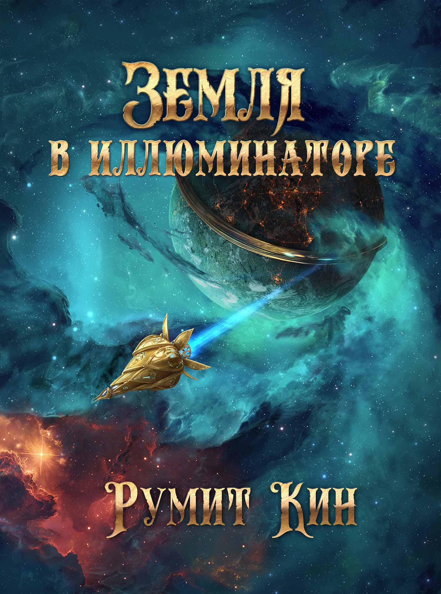

Земля в иллюминаторе
Оглавление
Часть первая. Шарту
Глава 1. Под отравленным небом
Глава 2. Время быть героем
Глава 3. Украденные души
Часть вторая. Чужак
Глава 4. Цена замысла жизни
Глава 5. Опасная Земля
Глава 6. Сердце пустого мира
Часть третья. Вопросы
Глава 7. Молчание исчезнувших
Глава 8. Перестановка всех фигур
Глава 9. Круг с сюрпризами
Часть четвертая. Память
Глава 10. Тёмная сторона
Глава 11. Великий огонь
Глава 12. Другое место боли
Часть пятая. Выбор
Глава 13. Лиловый шрам
Глава 14. Закон войны
Глава 15. Свергнутые гиганты
Часть шестая. Ясность
Глава 16. Золотой свет
Глава 17. Лицо под маской
Глава 18. Три молитвы, три пути
В помощь читателю
Другое
Земля в иллюминаторе
{kind=link}
Обложка. Художник И. Решетников.
Аннотация
Планета Земля изменилась. Атмосфера непригодна для дыхания. Людей осталось не много. Они живут в тяжёлых условиях, и с ностальгией вспоминают прежние эпохи: эпические цивилизации Джидана, Притака и Лимпы, а так же далёкий золотой век, который был до всех катастроф и войн. На краю последней ойкумены, среди красных скал и фратовых полей, стоит высокотехнологичный посёлок Шарту. Его жители привыкли защищать себя и свой дом с оружием в руках: с севера на них наступает корпорация Джиликон Сомос; а с юга им угрожают отряды монструозных киборгов.
Однажды в Шарту приезжает учёный-изгой – Ивара Румпа. С ним знакомятся и начинают дружить два мальчика-подростка – Хинта Фойта и Тави Руварта. Он рассказывает им о своей непростой судьбе и открывает перед ними таинственный мир своих исследований. Он верит, что есть способ улучшить участь всех людей и спасти остатки человечества от медленного увядания. Но прав ли он, или все его надежды – лишь бесплодная фантазия непризнанного гения, измученного невзгодами и утратами?
Часть первая. Шарту ➥